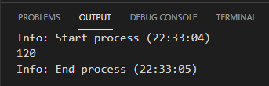

Funções são tarefas, rotinas, funcionalidades. Toda função precisa ter uma chamada (uma ordem - no exemplo abaixo é a mãe), essa chamada pode ser automatizada (evento). Precisamos ter um parâmetro (uma entrada - no exemplo temos dois parâmetro: o dinheiro e o que a mãe queria). A ação é outro processo, o processo realizado para realizar aquela função. No fim temos o retorno (no exemplo é quando entregamos o produto desejado).Obs.: Nem toda função usa parâmetros, nem toda função tem retorno.
Conceito técnico:
Para disparar um evento de uma função usamos alguns parâmetros do html, como o onclick (diz qual a função que irá ser disparada depois que eu fizer aquele evento - no caso o de clicar).

Dentro dos parênteses podemos adicionar parâmetros, que irão ser processados pela ação e podem ter um resultado. A ação não executa por padrão, precisamos ter uma chamada, que no exemplo é ação(5)

Quando eu executar o código ele vai pular a parte da função e irá executar o comando de baixo ação(5).
Esse último comando vai pra cima, como parâmetro. Então o parâmetro passa a valer 5 nesse exemplo. No final podemos ter o retorno de um resultado. Que será enviado para a chamada.
A chamada pode ser um onclick (no caso do HTML DOM) ou pode ser disparada pelo lado de fora.
No comando ação(5), o 5 também é um parâmetro, que chamamos de parâmetro real em cima é chamado parâmetro formal.
No exemplo, queremos verificar se um número é par ou ímpar. Dentro da função parimp queremos verificar se o número (n) dentro do parâmetro é par ou ímpar. Para verificar se ele é par ou ímpar é só verificar se aquele número é divisível por 2. Pra isso usamos o % (resto). Então se o n divido por 2 dar resto 0 ele é par, retorno par, se não retorno ímpar.
Obs.: eu posso ter mais de um retorn dentro de uma function.
Se eu deixar o código como está acima, ele não vai funcionar ao ser executado pois não temos a chamada ainda. Para fazer a chamada criamos uma variável (let res) que receberá a função parimp mais o valor que quero checar (11 é meu parâmetro agora):
Quando fazer o retorn ímpar essa palavra (ímpar) irá ser o valor da minha variável res.
Eu tenho duas possibilidades de retorno, mas nesse caso terei como retorn o 'ímpar'.
Aplicação desse exemplo:
Caso não quera a variável e deseja só mostrar o resultado na tela podes usar:
Podemos ter mais de um parâmetro:
Se por acaso não mandarmos dois números como parâmetros o retorno dará NaN (indefinido). NaN siginifica 'Not-A-Number (não é um número)'.
Porém ao colocar o n1 ou n2 igual à zero significa que se o n1 ou n2 não for passados eles valeram 0 (se for passado algum valor ele considera o valor passado). Então no exemplo acima ele considera um dos n igual a zero e a soma será 0 + 2, resultando em 2.
Também podemos jogar uma função dentro de uma variável.
Podemos também calcular o fatorial de um número. 5 farotial é igual a 5 x 4 x 3 x 2 x 1.
Podemos fazer o fatorial de uma outra maneira, a maneir recursiva. Uma recurssão acontece quando uma função chama ela mesma.
O curso básico vai até aqui, mas fica a dica: estude mais sofre funções!